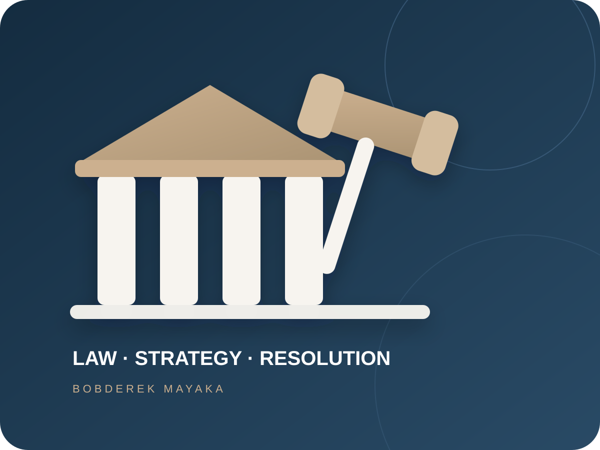

Corporate & Commercial
Legal opinions, instruments, governance, transactions and commercial advisory.
Corporate · Contracts · GovernanceAdvocate · Mediator · Legal Consultant
Bobderek Mayaka is an Advocate of the High Court of Kenya and Certified Professional Mediator providing practical legal support across disputes, corporate and compliance work, land matters and emerging technology.

01 / The practice
The practice combines litigation and dispute resolution experience with corporate, compliance, land and technology-facing legal thinking. The objective is straightforward: understand the facts, identify the legal route and help the client move with informed confidence.
02 / Services
Focused legal assistance across core commercial, dispute, regulatory and technology-facing matters.
Legal opinions, instruments, governance, transactions and commercial advisory.
Corporate · Contracts · GovernanceLitigation strategy, mediation and structured negotiation for business and individual disputes.
Litigation · Mediation · NegotiationLegal compliance processes, risk review, capital markets, insurance and regulated-sector questions.
Compliance · Markets · RegulationProperty, land and conveyancing support, documentation and legal due diligence.
Land · Property · Due diligenceLegal analysis and advisory involving constitutional rights and human-rights questions.
Constitutional · Rights · AdvisoryTechnology, AI, blockchain, digital governance, virtual currency and media-law issues.
AI · Blockchain · Digital law03 / The approach
A practical framework for personal growth, organisational development and sustainable outcomes.
Start with the people and facts. Build a disciplined process around evidence, law and risk. Produce a legal outcome the client can actually use.
Clients engage directly around the legal issue, available options and next steps — with commercial and practical context kept in view.
04 / Legal insights
Plain-language starting points for legal questions affecting organisations, investments, disputes and digital systems.
Clear authority, properly drafted instruments, documented decisions and compliance processes reduce uncertainty when relationships are tested.
AI, blockchain, digital systems and virtual currency can affect contracts, ownership, privacy, governance and accountability.
Where appropriate, structured negotiation and mediation may preserve time, relationships and commercial value.
Share the facts and receive guidance on the next practical step.